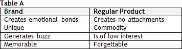
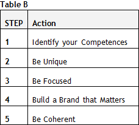
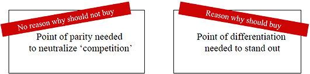
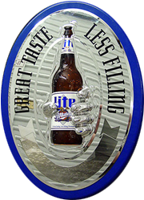
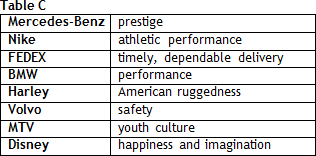

One main problem in Comunication is the difficulty placing ourselves in our listener’s shoes.


Obviously, since it is about a SALE, we need to understand the conditions under which the buyer acquires his/her PRODUCT, huh?

You have to understand the circumstances that make an Admission Committee (AdCom) officer give or deny you a spot. Their decision is solely based on 1,000 words (essays; sometimes even fewer), two reference letters (recommendation letters), one data form, one resume, and one interview report.
And? What’s your point?
The MBA application process is information-rich and time-poor. There is a lot to be processed in a very short time. Can you imagine the HBS AdCom evaluating almost 10,000 applications?
I once worked on recruiting for the consulting firm. I believe they won’t spend big bucks with this process.
The point is how can they make a risk-free decision? And my question to you: is it possible that they rely solely on your educational credentials, job title, and professional achievements when making their choices?
Definitely no, otherwise, there would be no essays in the process.
Exactly. Essays count. Their main purpose is to give applicants a chance to sell their genuine values. “OK, you work for a blue chip company; you gathered interesting personal experiences; you studied at ‘the best Brazilian university’, all right, but so what?”
Sure, we’ve talked about the importance of SYNTHESIS vs. ANALYSES. If the process were exclusively ANALYTICAL, they would not request essays. I get that point.
The ANALYSIS allows you on the game field, but it is the SYNTHESIS that will have you win the game. ANALYSIS is the aspect of COHERENCE in your package; SYNTHESIS offers you the emotional context of your candidacy.
In sum:
ANALYSES = COHERENCE
SYNTHESIS = EMOTIONAL APPEAL
Like it or not, hard facts alone will not put you in your dream MBA Program. You are a high-achiever candidate if others perceive you as such. If, on the other hand, they see you as a lousy candidate, the ‘TRUTH’ will not matter. The Adcom’s perception rules: admission or ding.
And what’s the trick, then?
You had better make a memorable image stick to the AdCom’s mind and heart. Powerful messages touch people. We bond with messages we like, with which we identify, and with which we feel emotionally connected. Make your candidacy memorable. BRAND conveys a consistent message and creates a similar emotional bond with important people around us.
OK, the idea is to promote the sale of an Ipad rather than just any cheap unbranded tablet.
Exactly, make sure you sell yourself a BRAND, not a REGULAR PRODUCT. Let’s recall the marketing lessons from college.

OK
Build yourself a reputation. You should be able to build a SELF BRAND, a reason or an emotion that will have the AdCom buy your candidacy.
We saw that. I need to have control of the way people perceive you.
Exactly. The BRAND of your candidacy is the first image imprinted on their minds - it is not what you say it is, but what the guys SEE. Personal Branding involves the story about your life that unfolds over time. It reveals your values, your relevance.
I believe that many applicants show resistance to this concept, right? After all, they do not like the ‘salesman’ label.
It is beyond self-promotion (although that will be a result). Avoid being taken as a selfish guy; self-marketing does NOT emphasize your personal qualities. If you want your reader and listener to keep your message/image in mind, build EMPATHY.
Sure, one secret of a good sale is the seller’s ability to establish empathy with the buyer.
Sure, you should package your brand with a verbal identity yet without being promotional.
Good to hear that; after all, I hate those “bullshitting marketers.”
Relax. If the exercise is well done, there is no need to be a vulgar marketer. Self-branding creates positive perceptions for the brand “YOU”. In writing your essays, you cannot limit yourself to what you want to say. Flip it. Think of the reactions you want from your target market, AdCom’s mind and heart. And what you have to do to get their reactions. The self-branding exercise is, mainly, a way of self-actualization: being who you are meant to be perceived.
Ok, Megaron, I’ve bought your product. Now comes the question: how to create a PERSONAL SELF BRAND? How to bring emotional appeal to my candidacy?
We set up a 5-STEP ACTION framework.

Let’s discuss each. The first is Brand Attributes - Identify your Competences (1/5 – Step Plan). Basically, you have to explore your attributes through your essays; not any attribute, but ones AdCom member appreciate.
But I’ve already done the analysis of those competences when I wrote the 8 STORIES, right?
Right. Let’s move on to the second element: Be Unique (2/5 – Step Plan). The AdCom’s brain/heart will focus on candidacies that bring something different to the table: “Why does your candidacy matter?” A successful brand is perceived as unique. The fundamental rule of branding is BE DIFFERENT.
This is a strange point. How to be UNIQUE amidst such similar people?
Nicholas, you have to understand that different perceptions, strengths, drawbacks, and personal experiences are assets that make each applicant unique. Anyone you know, or have known; anything you have done or thought about can be explored or contextualized. You should cultivate in people’s minds positive perceptions on who you are, what you have done, and what you can do.
I think that we’ve had a discussion on that. Being a jack-of-all-trades is not a smart strategy, huh?
It is smarter to be an expert in one area: the narrower the focus, the more powerful the brand. Most applicants like to portray themselves as “well rounded,” with multiple interests in life: sports, academia, arts, etc. Although this is a good way to lead life, it may not help build a compelling self brand.
During the IOM you told me about the idea that it is important to be UNIQUE in my application, but it is also imperative to reveal that you will not be an outsider in the learning environment. Is that it?
When positioning your BRAND, you should be aware that the successful applicant is always aware of the perfect balance between STAND OUT and FIT IN factors.
- STAND OUT: How is your BRAND different from competitors’? (POD – Point-of-Differentiation)
- FIT IN: How is your BRAND similar to competitors’? (POP - Point-of-Parity)

Would you mind illustrating? Our talk is heading towards the abstract. Megaron, do not tell me, show me! (Laughing)
Ok, Nicholas, what about an illustration from the corporate world?
Great.
Observe the positioning of Miller Lite beer:
- STAND OUT – POD (Point-of-Differentiation): less filling (lower calories)
- FIT IN – POP (Point-of-Parity): great taste.

In this context, the third point is highly relevant. You have to create a CLEAR IMAGE - Be Focused (3/5 – Step Plan). Your self-brand strategy should be short and focused. If you are unable to say it briefly, then your strategy is probably muddled.
Do not try to hold the whole world on your back, is that so?
Exactly. Pick a good battlefield and fight for it. Try to focus on 3 Competences to build your BRAND – do not attract suspicions when you say you are superhero – even superman is recognized for 2-3 superpowers.
And does that also apply to career?
Yes; try to focus on your post-MBA career plan – THE NARROWER, THE BETTER. You want to become a management consulting partner? OK, no problem. Which practice? Why? What is the relevance of your choice? It is easier to visualize a candidacy that specifies its purposes. The fourth point is the need to Build a Brand that Matters (4/5 – Step Plan).
I remember we went over this when we discussed the “Who Are You Essay”.
Yes, this is a super applicable element. It reveals your inner passions and core essence and helps you stand out in the crowd. People matter. Show how your values are related to those of your family, community. Remember: a HUMAN BEING will read your essays and thus buy your values. Find your own cause, one to mobilize your reader’s heart. For many people, doing something meaningful is much more important than achieving the standard definition of success. Dare: no one will listen to any dull dreams. Make your brand communication go from a monologue to a dialogue.
It is the so called “emotional resonance” that the product must present, right?
Yes, self-branding requires that you dare and put forth an idea. Your strategy should dramatize a benefit. And it should be distinctive to intrigue people and draw their curiosity and further interest. Before you sell your IMAGE, make sure you answer the question, “Do you like the way people see you? No? What have you done to change that?”
If you do not believe in yourself, who will?
If you do not believe in your story, you will probably have trouble selling a positive IMAGE. Make a unique BRAND PROMISE. Put a VISION about your FUTURE in the AdCom’s minds. A different brand strategy is a way to become memorable and stay at the top of AdCom’s mind.
Any examples?
The most common positioning strategy for brands is to stand for something.

The last point is to reveal COHERENCE (Be Coherent - 5/5 – Step Plan). Differentiation has evolved from ‘WHAT IS IT?’ to ‘OK, BUT SO WHAT?’ focus. While your résumé and data form will help the AdCom understand your point, they cannot enable it to see your values. At some point, you are supposed to stop analyzing your elements and start bringing the pieces together – the AdCom will be looking for a whole IMAGE – you should thus connect the dots and bring a synthetic understanding of your values.
Ok.
Great, so now revisit your strengths and weaknesses as well as the opportunities and threats you find.
I will try, Megaron.
I know you’ll be tempted to skip this step, so I do ask for your effort. You will not do a good SYNTHESIS job if you do not understand how people perceive you. We do not expect you to find it easy to fill in this table, but we do believe that you should reflect on your own before our meeting. Of course, we will help you refine the positioning of your SELF BRAND.
I’ve read Gladwell’s Blink. What called my attention is that, in only a few seconds, people will form opinion on anything/anybody.
This book is fantastic. That is the idea. Understand how people will judge you. I will close our chat with Oscar Wilde: “It is only shallow people who do not judge by appearances. The true mystery of the world is the visible, not the invisible....”
Any homework?
Just thinking about what we have just discussed.